Your logo on the next page
Pick your company logo once. New pages start with it. Choose a partner logo for one page and keep your company default.
Open the PR preview · PR #1033
1. Add your first logo
Leave "Use on new pages too" ticked. This logo starts new pages.
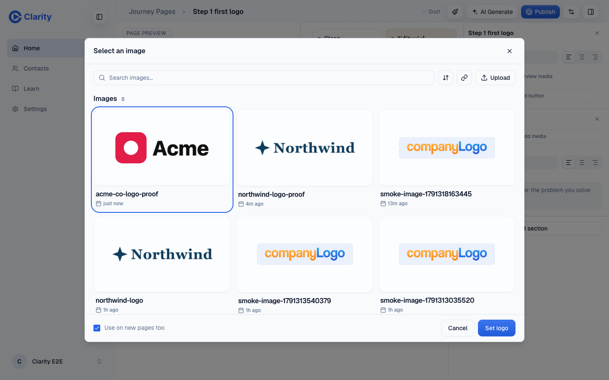
Tap a screenshot to open it at full size.2. Open a new page
The company logo is already there.
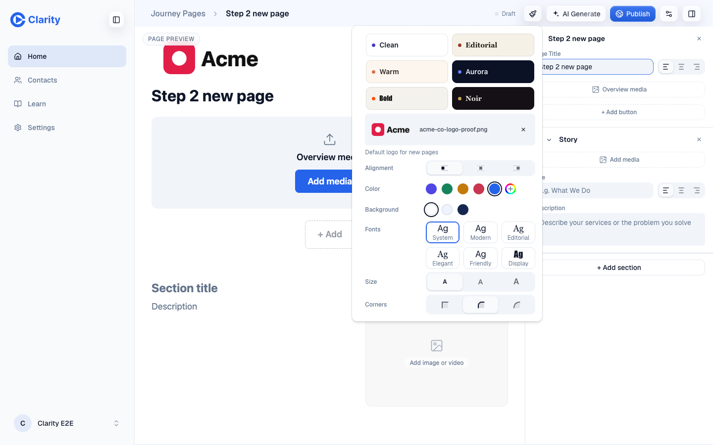
Tap a screenshot to open it at full size.3. Add a partner logo
The box starts unticked. The partner logo changes this page. New pages keep the company logo.
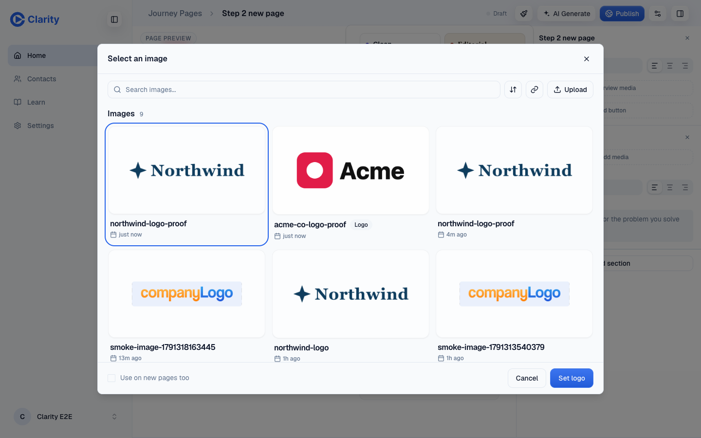
Tap a screenshot to open it at full size.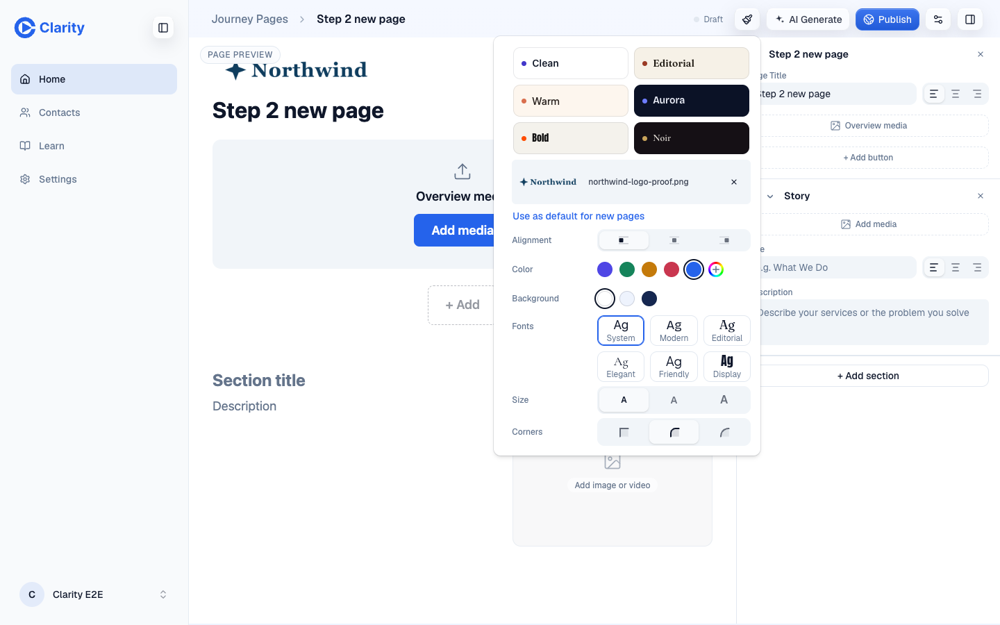
Tap a screenshot to open it at full size.4. Check Settings > Branding
Settings shows the logo that new pages copy.
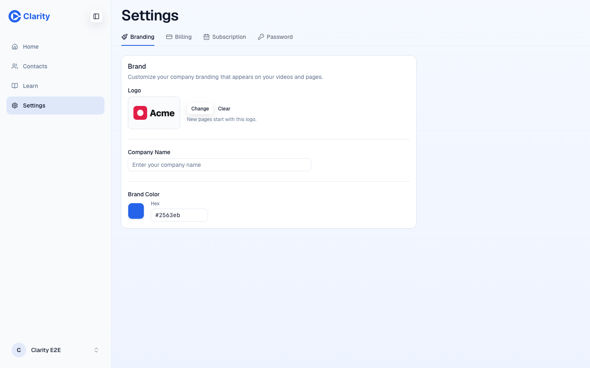
Tap a screenshot to open it at full size.5. Delete the default
Delete its image in Library. Settings then has no default logo.
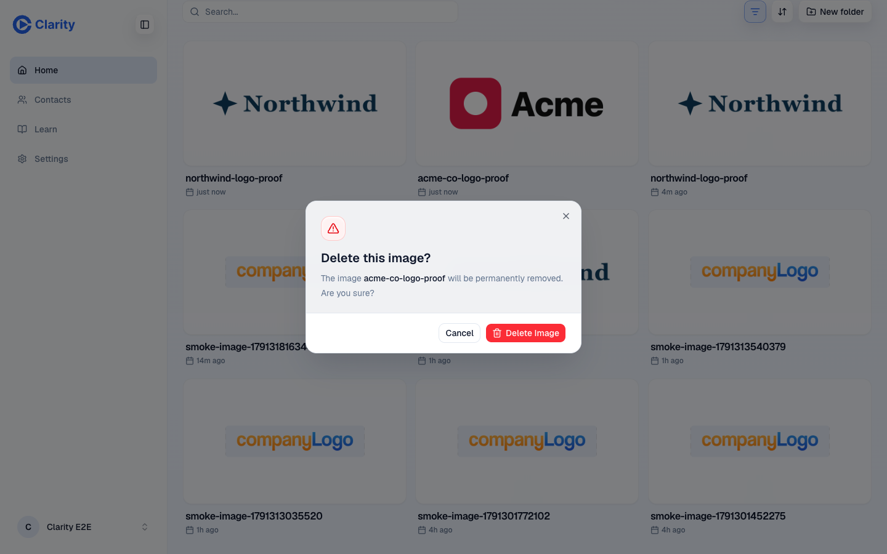
Tap a screenshot to open it at full size. Tap a screenshot to open it at full size.
Tap a screenshot to open it at full size.6. A default save fails
This test disconnects the browser before clicking "Use as default for new pages". The editor shows "Could not set your default logo" and "Try again in a moment."
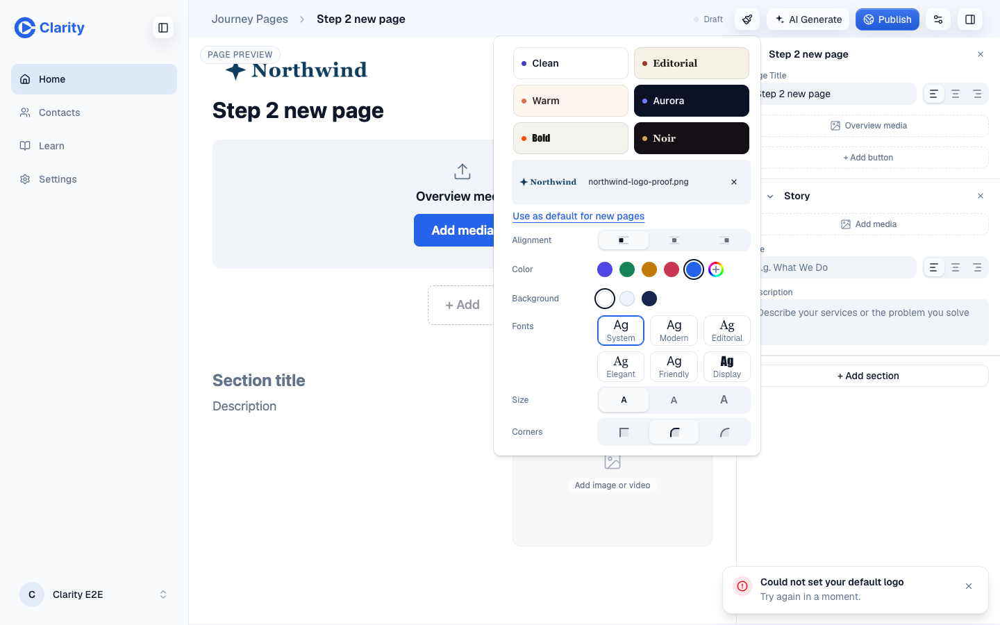
Tap a screenshot to open it at full size.7. Bring an old-app logo over
Before the backfill, the account has only an old logo address. After the backfill, its Library has an image, Settings shows the default, and a new page starts with it.
 Before the backfill Tap a screenshot to open it at full size.
Before the backfill Tap a screenshot to open it at full size.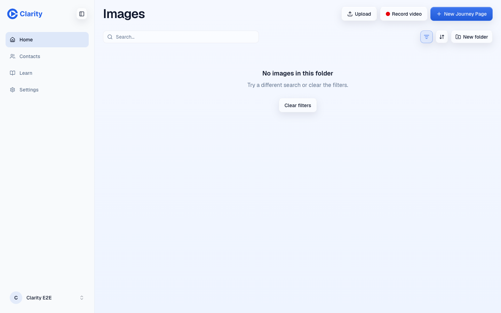
Before the backfill Tap a screenshot to open it at full size.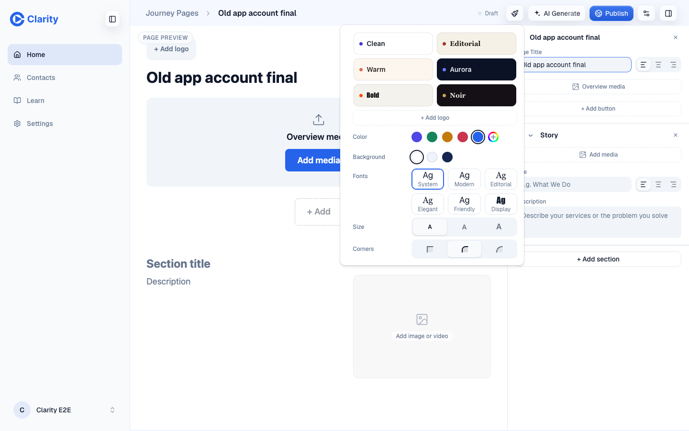
Before the backfill Tap a screenshot to open it at full size.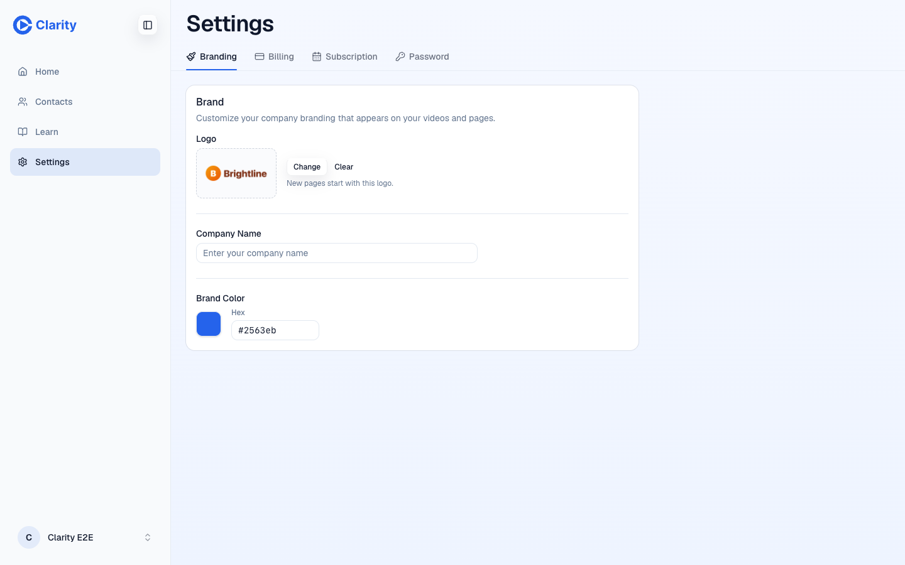
After the backfill Tap a screenshot to open it at full size.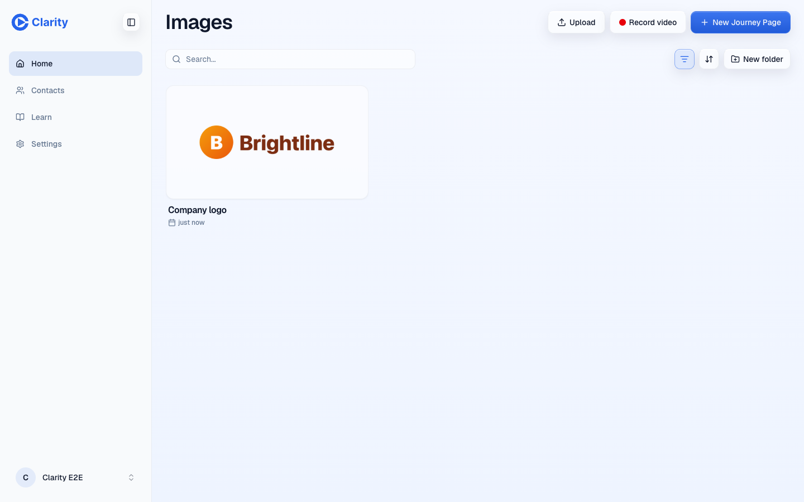
After the backfill Tap a screenshot to open it at full size.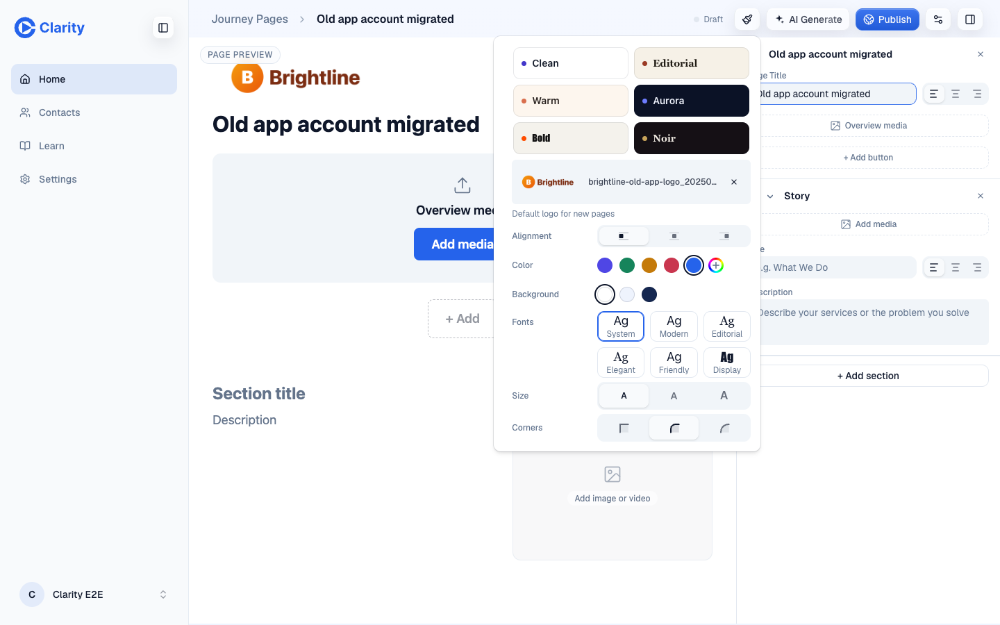
After the backfill Tap a screenshot to open it at full size.
Try it now
- Open the PR preview above. Sign in with the QA account. Its email and password live in
.env.e2e.local under E2E_QA_EMAIL and E2E_QA_PASSWORD. The password is not on this public page.
- Start from the verified partner page, then click Home and New Journey Page. Name the page. The QA default was left unset for your test. Open Page style, then + Add logo. Upload this company logo. Leave Use on new pages too ticked and click Set logo.
- Create another blank page. It should already have the company logo. Open Page style, change the logo, and upload this partner logo. The box should start unticked. Click Set logo. This page gets the partner logo.
- Open Settings > Branding. It should still show the company logo. Create another blank page to confirm it uses the company logo.
- Open Library > Images. Delete the company logo you chose as the default. Settings should now show no default. A new page should have no company logo.
- Open the partner page again. Open Page style. Turn on Offline in Chrome DevTools, then click Use as default for new pages. You should see the error in screenshot 6. Turn Offline off before continuing.
- To inspect the old-app example, sign in with the basic test account. Its credentials live under
E2E_USER_BASIC_EMAIL and E2E_USER_BASIC_PASSWORD. Open the before and after pages listed below. The before page has no logo. The after page has the copied old-app logo. Library and Settings also show that image after the backfill.
Open the basic account's before page and after page. These URLs came from the browser run. The backfill leaves the before page unchanged.
Production backfill
The read-only run found 258 accounts with old logo addresses. It would migrate 124. It skipped 123 missing images, 8 chosen defaults, and 3 addresses for another environment. It found no oversized or non-image objects. No production write ran.
Run the production write only after this PR deploys to production, a fresh dry run passes, and William approves the write separately.
XDG_CONFIG_HOME="$HOME/.clarity-wrangler" node scripts/backfill-legacy-logos.mjs --env production --apply --results .context/legacy-logos/production.jsonl
What the preview runs
The preview runs PR head 334205394c25024d6c8a8f5214580193ca1ad578 in CI merge commit 24d4762577f57d895479c82eb9dfda899f633618. GitHub reports merge commit 821a13a93900598476653fa4107f4bb681cfd6bc. The workflow creates its own merge commit. The requested exact GitHub merge-commit check therefore did not pass. This is a follow-up, not a logo change.